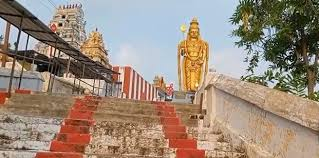

THIRUVANNAMALAI
MURUGAN TEMPLE

The ARULMIGU SRI NACHATHIRA GIRI MURUGAN AALAYAM, also known as Vilvarani Murugan Temple, is a 1200-year-old temple located on a hillock in Vilvarani, near Tiruvannamalai. The presiding deity, Lord Murugan, is a self-manifested idol.The Vilvarani Murugan Temple statue is a magnificent, golden-colored idol of Lord Murugan, which is a rare and majestic feature of the temple. The deity's idol is also believed to be "swayambhu," or self-manifested, and the temple is located on a hillock with approximately 300 steps to reach the top. It is also called Nakshatra koil and is located near Chengam in the Thiruvannamalai district of Tamil Nadu.